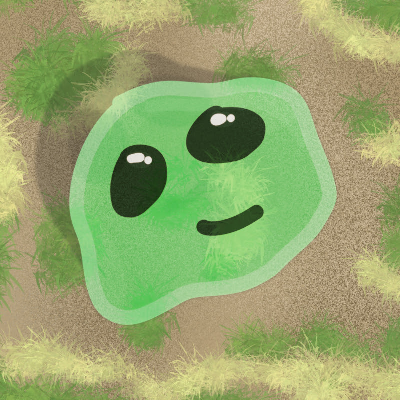
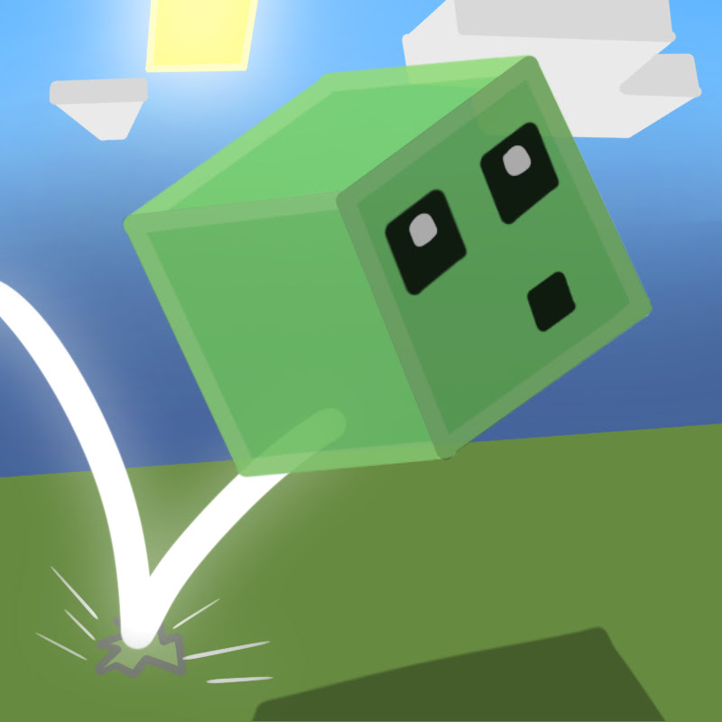
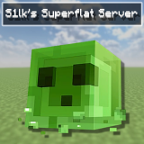

S1lk08
Explore my Minecraft content! Watch countless SMP stories, engage in occasionally comedic videos, and experience the BEST of S1lk08!
 Visit Minecraft Channel
Visit Minecraft Channel

Visit VR Channel
S1lkVR
From VR gameplay to other gaming adventures, this channel showcases a variety of experiences beyond Minecraft.
Visit VR Channel

Visit Animation Channel
S1lkAnimations
Check out my original animations, projects in progress, and creative experiments!
Visit Animation Channel
Twitter (X)
Follow me for updates, announcements, and general fun content directly on Twitter (X).
 Follow on X
Follow on X

 Join Discord
Join Discord
S1lk's Superflat Server (Discord)
Join our community, chat about games, animations, or just hang out with other fans of S1lk08!